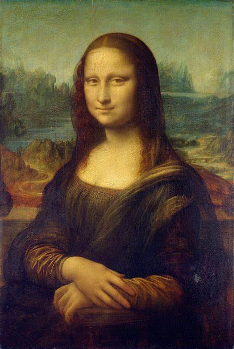
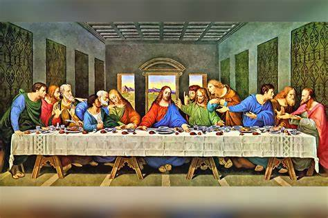

Leonardo Da vinci
Leonardo nació el 15 de abril de 1452; era hijo ilegítimo de un notario de la localidad de Vinci, cerca de Florencia. Era un niño dotado, especialmente para la música y el dibujo. Hacia 1464, el joven Leonardo fue enviado como aprendiz al taller de Andrea del Verrocchio (c. 1435-1488) para estudiar y seguir una carrera de artista
¿QUIEN FUE?
Pintor, inventor, escultor, arquitecto, ingeniero, astrónomo... Clasificar al italiano (Anchiano, Italia, 15 de abril de 1452 - Amboise, Francia, 2 de mayo de 1519) en una sola disciplina es una tarea imposible. Su figura encarna perfectamente el ideal del hombre del Renacimiento; un polímata versado en multitud de disciplinas, tanto de las artes como de las ciencias. Como inventor dejó trazadas las ideas de lo que luego serían dispositivos y aparatos tan dispares como el paracaídas, el helicóptero y el tanque, aunque el nivel tecnológico de su época hizo imposible que los viera convertidos en realidad.

OBRAS
LA MONA LISA
El Retrato de Lisa Gherardini, esposa de Francesco del Giocondo, más conocido como La Gioconda (La Joconde en francés), o Mona Lisa, es una obra pictórica del pintor renacentista italiano Leonardo da Vinci. Fue adquirida por el rey Francisco I de Francia a principios del siglo XVI y desde entonces es propiedad del Estado Francés. Se exhibe en el Museo del Louvre de París.

LA ULTIMA CENA
La Última Cena de Leonardo da Vinci (Cenacolo Vinciano) es una de las pinturas más famosas del mundo, la obra fue pintada entre 1494 y 1498 bajo el gobierno de Ludovico el Moro y representa la última "cena" entre Jesús y sus discípulos.
Para la creación de esta obra única, Leonardo realizó una investigación exhaustiva creando una infinidad de bocetos preparatorios. Leonardo abandona el método tradicional de la pintura al fresco, pintando la escena "al seco" en la pared del refectorio. Se han encontrado rastros de láminas metálicas de oro y plata que son testimonio de la voluntad del artista de hacer las figuras de una manera mucho más realista incluyendo detalles preciosos.

ORIGEN
La ballesta gigante es un tipo de arma de tiro creada por Leonardo da Vinci, cuyos dibujos se encuentran en el Códice Atlántico. Nunca construida por su diseñador, fue fabricada a escala 1:1. La idea original de Da Vinci, como se describe en los dibujos, era construir una ballesta gigante para aumentar el alcance del dardo. Se utilizó para disparar bombas y piedras y se usaba principalmente para intimidar. El arco estaba hecho de madera delgada, sobre seis ruedas, 27 metros de diámetro y compuesto por 39 partes distintas.
OBJETIVO
La creación del diseño de la ballesta gigante está relacionada con Ludovico Sforza, un príncipe italiano del Renacimiento, que deseaba ampliar y hacer evolucionar tanto su ejército como la región de Milán. Entonces quiso actualizar el tratado actual sobre ingeniería militar de Roberto Valturio. Leonardo da Vinci respondió escribiendo a Sforza una carta que incluía un cierto número de diseños de máquinas innovadoras, entre ellas la ballesta gigante. También destacó en su carta su experiencia en ingeniería, probablemente sabiendo que Sforza estaba contratando ingenieros militares en ese momento.